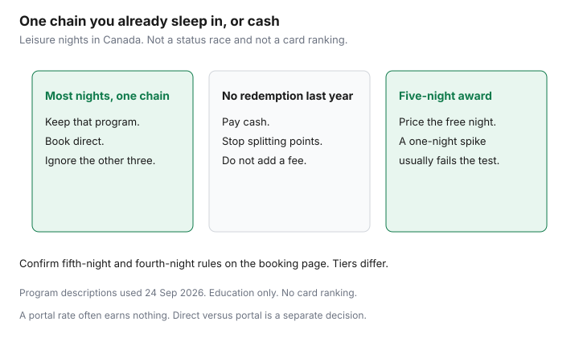

Travel · Canada
Which Hotel Loyalty Program Makes Sense for Canadian Leisure Travellers?
Joining every hotel program feels like being prepared. It is how a household ends a year with three small balances and no free night. Canadian leisure trips pile up in a handful of cities and on a handful of brands. The program that matches those nights is the one worth learning. The others can wait.
This is a footprint and a redemption test. It is not a status race, and it is not a card ranking. Earn tables and free-night rules were checked against program descriptions current as of 24 Sep 2026. They move. The booking page on the week you stay is the rule. Where to click, direct or a portal, is already the direct versus portal guide.
Disclosure: Hotel loyalty program sign-ups are an offer type. Saving Optimizer may earn a commission if we later add those links. We do not currently claim a Marriott, Hilton, IHG, or Choice partnership. No credit card is ranked. Education only.
Key takeaways
- Pick the chain that already covers the trips you take. In Canadian cities, Marriott Bonvoy is the widest full-service set, Hilton Honors is the major-city set, IHG is the Holiday Inn Express map in smaller cities, and Choice Privileges is the highway and small-city map.
- Base earn on a direct booking is commonly 10 points per US dollar of eligible room spend at full-service brands, and less at some extended-stay brands. Taxes often do not earn. Dynamic award prices move with cash rates. A category chart is not a price you can count on.
- A free-night rule (Marriott’s fifth night, Hilton’s fifth night for eligible elite, IHG’s fourth night for eligible elite) helps on a stay long enough to trigger it. A one-night spike in August usually does not.
- Status from a credit card is useful only if you will use the benefit on stays you were going to make. This page does not name a best card. A fee for a program you will not sleep in is the cost of the trip.
- One ecosystem beats three half-balances. Transfer partners are a tool the week you have a priced stay, not a reason to move points “in case.”
- Once a year, read expiry dates and certificate dates. If you did not redeem, stop splitting, and do not pay another fee to keep a balance that never clears a free night.
Map Canadian footprint: Bonvoy, Hilton Honors, IHG, Choice—where you actually stay
List last year’s nights and next year’s likely trips before you look at a status chart. The brand on the highway you already use beats the brand that wins a points blog and has one hotel in your province.
| Program | Where Canadian leisure trips actually land | Weak spot |
|---|---|---|
| Marriott Bonvoy | The widest set in the cities households visit: Delta, Marriott, Sheraton, Westin, Courtyard, Fairfield, Residence Inn, Four Points, and resort pockets such as Banff and Whistler. | Extended-stay brands earn fewer points per dollar on Marriott’s published table. A portal rate often earns nothing. |
| Hilton Honors | Hilton, DoubleTree, Hilton Garden Inn, Hampton, and Homewood in major cities. Useful when the trip is urban and you want a desk. | Thinner in small towns. A highway night may not be a Hilton night at all. |
| IHG One Rewards | Holiday Inn and Holiday Inn Express show up in secondary cities and near airports. Crowne Plaza and InterContinental are the downtown exceptions. Staybridge is the kitchen. | A Canadian-issued card that earns IHG directly is not the usual setup. Do not plan the program around a card you cannot get here. Confirm before you assume one exists. |
| Choice Privileges | Comfort, Quality, Clarion, and the Radisson brands that sit with Choice in the Americas. This is the drive-between-cities inventory. | Downtown Toronto and a Europe city break are often a different chain. Choice points do not become a Paris hotel by enthusiasm. |
If eight of your last ten nights were Holiday Inn Express and Courtyard, you do not have a “hotel strategy.” You have two programs, and one of them is probably ahead. Put the next year of similar nights into the leader. A Banff week and a Florida package are allowed to be cash. They do not have to join a third program for one stay. The tax on that stay is a separate total, in the lodging-tax guide.
Earn rates, free-night sweet spots, and dynamic award pitfalls
Points earned on a stay are a thin rebate unless they reach a night you would have paid for. Programs publish a base earn on eligible room charges when you book direct. A common published base is 10 points per US dollar at full-service brands. Marriott’s extended-stay brands are on a lower published rate. Hilton’s Homewood and Spark-style brands have been on a lower base. IHG publishes a lower base at Staybridge and Candlewood. Choice publishes 10 points per eligible dollar on many North American brands, with a lower earn on some long extended stays. The folio is in Canadian dollars. The program converts it. Taxes and incidental charges often do not earn. Read the earn table for the brand name on the door, the week you book.
A free-night rule changes a long stay and does nothing for a one-night city break.
- Marriott publishes a fifth night free when you book five consecutive nights on points. Members get it. It is the cleanest leisure rule if you already take week-long stays.
- Hilton publishes a fifth night free on standard-room reward stays for eligible elite tiers, not as a universal member perk. Four paid nights a year may never unlock it. Confirm the tier on the award screen.
- IHG publishes a fourth-night reward for eligible elite members on a points stay. If you are not in that tier, do not count the free night in the plan.
Award prices are dynamic. The cash rate and the points rate move together. A Tuesday in November at a Holiday Inn Express can be a sensible redemption. The same hotel on the August long weekend can ask triple the points for a room you would not have bought at the cash price either. Use the same cents-per-point idea as a flight: the cash rate you would actually have paid, minus anything you still pay on the award, divided by the points. If the result loses to paying cash and keeping the points, pay cash. Resort and destination fees: some programs waive them on an all-points stay. Confirm the waiver on the award screen. A fee that survives the “free” night is a cash rate you did not plan.

Status via credit cards vs stays—educational only, no best-card ranking
Hotel status is a bundle of breakfast, a possible late checkout, and a bonus on points earned. It is not a discount on the room rate you can count in the budget. You can earn it with nights, or a card you already hold may grant a mid-tier status as a benefit of that card. Both paths are real. Neither path is a recommendation to open a product.
Use status when three things are true at once: you will stay in that chain often enough to use the breakfast or the late checkout, the annual fee is covered by stays you were going to make anyway, and you book direct so the stay actually credits. A card benefit that requires the card to pay for the stay does not trigger on a portal rate. A status you hold and never attach to the reservation is a status you do not have on that trip. Log in before you book.
Do not open a card to “start” a program for one long weekend. The fee is then part of the cost of the weekend, and the free-night certificate that came with the card expires on its own clock, often inside a year. If you already hold a cobrand, read whether this stay qualifies, then decide direct versus portal using the dollar gap in the other guide. If the portal is cheaper by more than one free night you will actually take, the portal can win and the status can sit this once. This page will not sort cards from best to worst. A ranking is a different product, and it goes stale the week the fees change.
When one ecosystem beats splitting points across three programs
A free night has a threshold. Splitting spend across Bonvoy, Hilton, and IHG keeps every balance under that threshold. One ecosystem means the next ordinary stay moves the same balance.
Stay with one program when most of your nights are already in that chain, or when one chain covers both the Canadian city you visit and the sun or Europe hotel you want next. Split only when the nights are genuinely in different chains and each chain will reach a redemption you have priced. “I might stay there someday” is not a split. A labelled year: 12 nights, all of them Holiday Inn Express and one Crowne Plaza. That is IHG. Adding a Hilton number for a single airport Hampton does not create a Hilton free night. Pay cash for the Hampton, or book it as a one-off and do not count the points.
Couples should pick the same program. Two half-balances in two names do not combine at checkout unless the program’s household or pooling rule says they do. Read that rule before you assume a transfer between spouses is free. If pooling is clumsy, put the reservation in the name that holds the points and add the other person as a guest.
Transfer and alliance partners that help Canadian sun and Europe trips
Hotel points are for hotel nights. Airline points are for flights. Moving one into the other is a one-way door. Do it when you have already priced both the hotel award and the cash rate, or when you are short a specific flight award and the transfer ratio still beats buying the missing miles.
Some Canadian transferable-points programs publish a path into Bonvoy or Hilton. The ratio and the partner list change. Open the transfer page the week you move points. A transfer you make “so the points are somewhere” is how a flexible balance becomes a hotel balance you cannot use. Marriott has published a path from Bonvoy points to airline miles, including a bonus at a set transfer size. That path can fill a gap on a Europe flight if you are short Aeroplan points and you have run the cents-per-point test in the Aeroplan versus cash guide. Confirm the ratio before you move anything. The bonus has changed before, and a bad ratio is a bad redemption with extra steps.
Sun weeks booked as packages often earn neither hotel elite credit nor a useful pile of hotel points. Do not transfer a balance into a program to feel organized about a package that will not credit. Pay the package in the simple way, and keep hotel points for a stay you book direct. Alliance partners matter when the Europe hotel you want is in the chain you already earn, and the flight is a separate decision. They do not matter when you are collecting four programs for one week in Lisbon.
Annual audit: expire dates, category changes, and when to burn vs hold
Once a year, on a date you will keep, open each program you still belong to. Write four lines.
- Points expiry. Some programs let points sit as long as the account has activity. Some expire after a set number of months without a stay, a transfer, or another action the terms count. Read the current terms. A memory of “they never expire” is how a balance dies.
- Certificate expiry. A free-night certificate is not the points balance. It often dies on its own date, inside a year of when it was issued. If you will not travel before that date, the certificate is not an asset. It is a reminder that the fee which produced it needs a harder look next year.
- The redemption you will actually take. Price one upcoming stay in points and in cash. If the points price is a multiple of a normal night, hold the points or pay cash. If the points price clears a number you would be proud to explain, book it and stop searching.
- The program you did not touch. If a program got no nights and no redemption, stop giving it new stays. Let it sit until you need it, or use the balance on the next trip that fits, then leave it. Three active programs is a hobby. One is a household system.
Dynamic prices and brand exits will keep happening. A hotel that leaves a program takes its award nights with it. If a stay you care about is available at a price that works, book it. Waiting for a category chart to come back is waiting for a product many of these programs no longer sell. The cash-back alternative, when the whole points project has not paid, is the cash-back guide.
Sources & date stamps
- Marriott Bonvoy, Hilton Honors, IHG One Rewards, and Choice Privileges public earn and award-benefit descriptions — base earn differs by brand; fifth-night and fourth-night rules are tier-specific where noted in the text. Confirm the page on the week you book. Descriptions used 24 Sep 2026.
- Direct-booking points and elite credit, and the best-rate guarantees, are documented in the direct-versus-portal guide on this site. A typical prepaid agency rate does not credit.
- No card fees or welcome offers are quoted here. A ranking would be stale, and this page does not make one.
Frequently asked questions
Which hotel program fits Canadian leisure trips?
The one that covers nights you already take. Marriott Bonvoy is the widest city and resort set. Hilton Honors covers major cities. IHG’s Holiday Inn Express map fits smaller cities. Choice Privileges fits highway and small-city drives. A program with no hotel on your trips does not fit.
How many points do hotel stays earn?
Programs publish a base on eligible room spend booked direct, commonly 10 points per US dollar at full-service brands and less at some extended-stay brands. Taxes often do not earn. Read the earn table for the brand on the door. A typical prepaid agency rate often earns nothing.
Should I get a credit card for hotel status?
Only if you will use the status on stays you were going to make, and this page will not name a card. A fee for a program you will not sleep in is part of the cost of the trip. If you already hold a cobrand, attach it and book the channel that actually credits the stay.
Is it worth joining every hotel program?
No. Three balances stay under a free-night threshold. Put similar nights into one program. Pay cash for a one-off night in a different chain. Couples should confirm whether points even pool before they split stays across two names.
Do hotel points expire?
Some programs keep points as long as the account has the activity their terms count. Others expire after a set number of months without that activity. A free-night certificate usually has its own, shorter date. Read the current terms once a year. Do not trust a memory that they never expire.